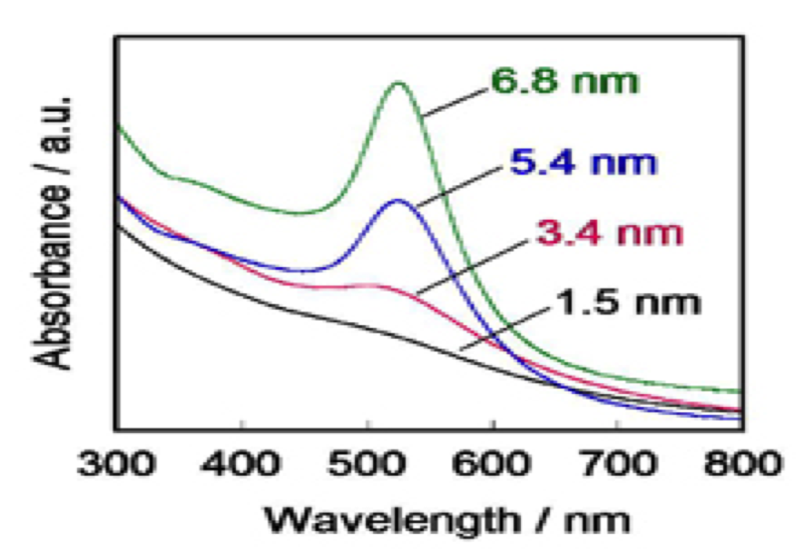
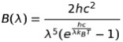

For a long time, Colloidal gold nanoparticles (AuNPs) have been used by artists to exhibit vivid colors in stained glass. These days, they are utilized in a wide range of applications due to their optical and electronics properties. Here, we summarized the properties of gold nanoparticles that are involved in this project.
Gold nanoparticles absorb light of a specific wavelength depending on their size and density. This graph shows that UV light, a wave length from 300 to 400nm, is absorbed by gold particles.
The principle of interference, that is wave superposition, explains the relation of the total displacement to the individual waves. When two or more propagating waves of same type are incident at a certain point, the total displacement at that point equals to the sum of that of each individual waves.
There are two types of interference, namely, constructive interference and destructive interference. Constructive interference occurs when a crest of a wave meets the crest of another wave of the same frequency. In this case, the total magnitude at that point is the sum of the magnitude of the individual waves. Destructive interference, on the other hand, occurs when a crest of a wave meets the trough of another wave. In this case, the total displacement is equal to the difference of the two individual waves.
Wave interference can be seen when rain drops fall into a pond, for example.
Let’s see these phenomena in a mathematical way.
Wave equation is given by the following;
f(x,t) = sin(k(x-x_0)-ωt)
where f(x,t) is the magnitude of wave, k is wavenumber, x is the observation point, xo is generation point of wave, ω is angular frequency, and t is time.
The total displacement at a certain point is the sum of that of the individual waves. Therefore, the total magnitude is given by;
f_total (x,t) = ∑_(x_0)^n▒〖sin(k(x-x_0)-ωt)
where n is the number of wave generation points.

Where B is energy[W/m3], λ is wave length, h is Planck constant 6.626×10−34 [J*s], c is speed of light 2.998×108[m/s], kB is Boltzmann constant 1.381×10-23[J/K] and T is temperature 5800[K].